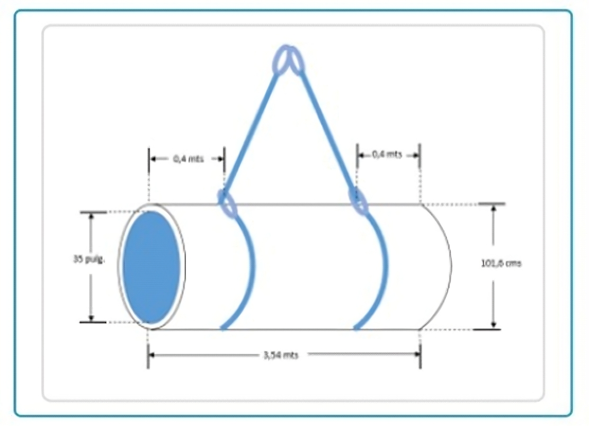
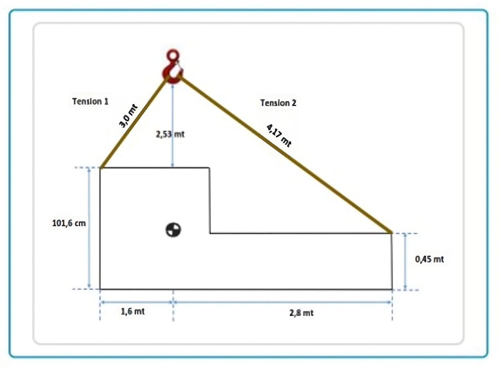
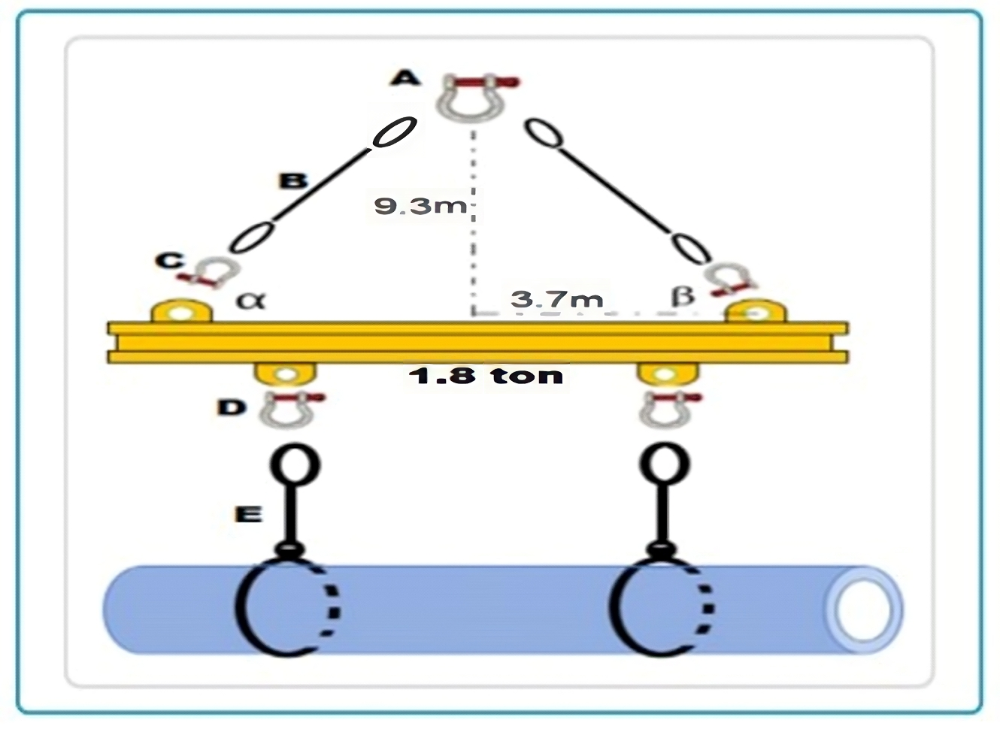

Go Back
GENERAL KNOWLEDGE
43) What will be the weight of an iron pipe 7.85 ton/m
3
, with a lower diameter of 35 inches, upper diameter of 101.5 meters, length 3.54 meters, difference 1: 0.4 meters, difference 2: 0.4 meters:
a. 8,789 tons.
b. 4,567 tons.
c. 9,324 tons.
d. 5,28 tons.

Check
44) Calculate the angle formed by a sling in the operation, total length = 6 meters, iron pipe 7.85 ton/m
3
, with a lower diameter of 35 inches, upper diameter of 101.5 meters, length 3.54 meters, difference 1: 0.4 meters, difference 2: 0.4 meters:
a. 35°.
b. 90°.
c. 60°.
d. 55°.
Check
45) Calculate the tension of both slings, load weight 5 tons:
a. Tension 1 = 3.499 tons, Tension 2 = 3.100 tons.
b. Tension 1 = 3.489 tons, Tension 2 = 2.771 tons.
c. Tension 1 = 4.567 tons, Tension 2 = 3.989 tons.
d. Tension 1 = 3.956 tons, Tension 2 = 3.335 tons.

Check
46) Calculate the net weight of the load, diameter 72 (in), thickness 65 (mm), length 15 (m), concrete 2.4 ton:
a. 12.3 tons.
b. 10.65 tons.
c. 13 tons.
d. 12.901 tons.

Check
47) Calculate the length and angle of sling (B), gross weight of 14.701 tons:
a. Length = 7.6 meters, angle = 56°.
b. Length = 6.4 meters, angle = 45°.
c. Length = 10 meters, angle = 68°.
d. Length = 11 meters, angle = 67°.
Check
48) Calculate the actual capacity of shackle (A), 1 1/2" shackle, WLL 30 tons:
a. 30 tons.
b. 28 tons.
c. 21 tons.
d. 18 tons.
Check
49) Calculate the actual capacity of sling (E), 3/8" cable sling, WLL 9.5 tons, triangulation angle 78°:
a. 6.0 tons.
b. 9 tons.
c. 8 tons.
d. 7.5 tons.
Check
50) A proof load is:
a. A load that can be applied to test materials or manufacturing.
b. When lifting products fail.
c. The maximum load that a product is authorized to hold.
d. Theoretical reserve capacity.
Check
51) The minimum design factor for chain slings and their accessories is:
a. 5 to 1.
b. 6 to 1.
c. 4 to 1.
d. 3 to 1.
Check
52) What will be the capacity for a chain sling in a linked hitch:
a. 75% of a vertical.
b. 25% of a vertical.
c. Equal to a vertical.
d. None of the above.
Check
53) The size of the segregated area is:
a. 1 time the height of the suspended load.
b. 2 times the height of the suspended load.
c. 3 times the height of the suspended load.
d. 4 times the height of the suspended load.
Check
1
2
3
4
5
6
7
8
9
10
11
12